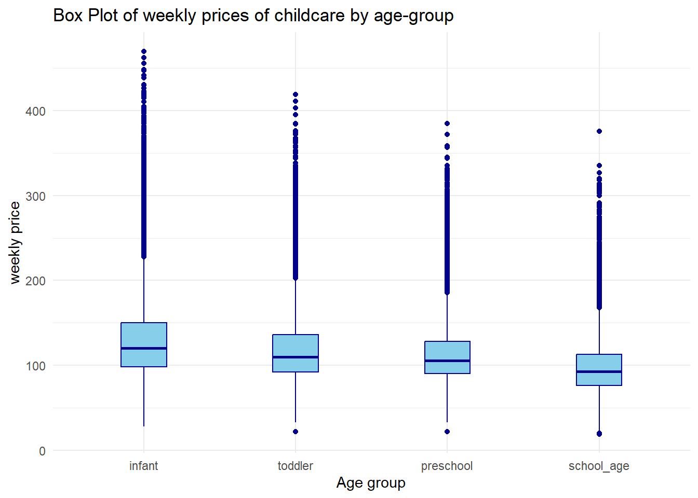
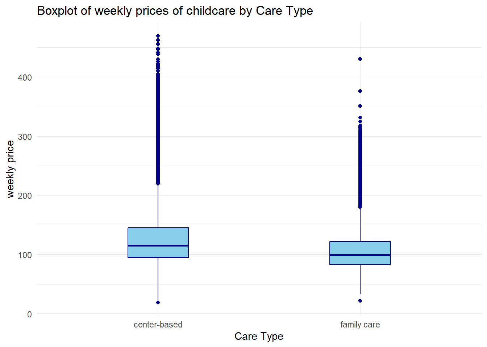
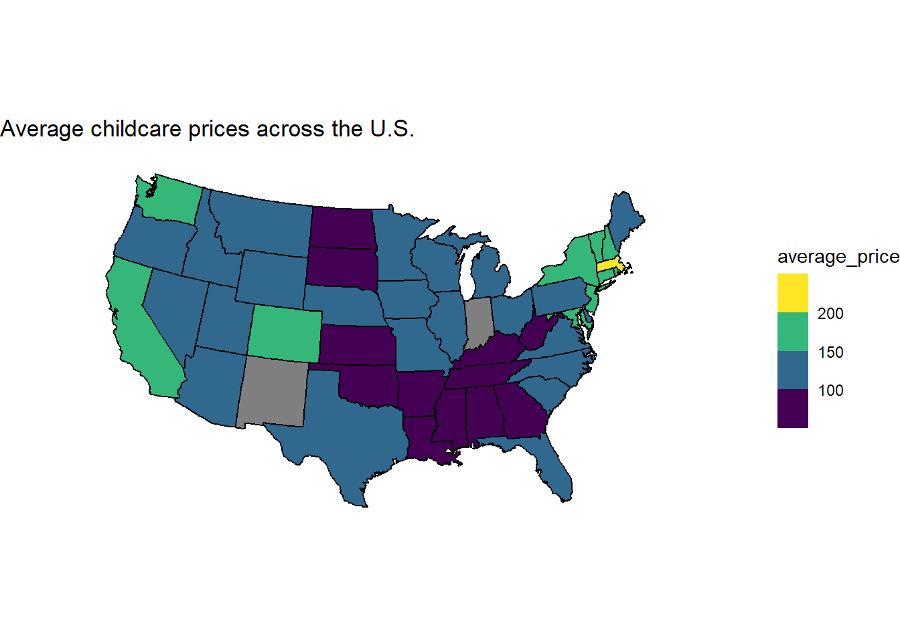
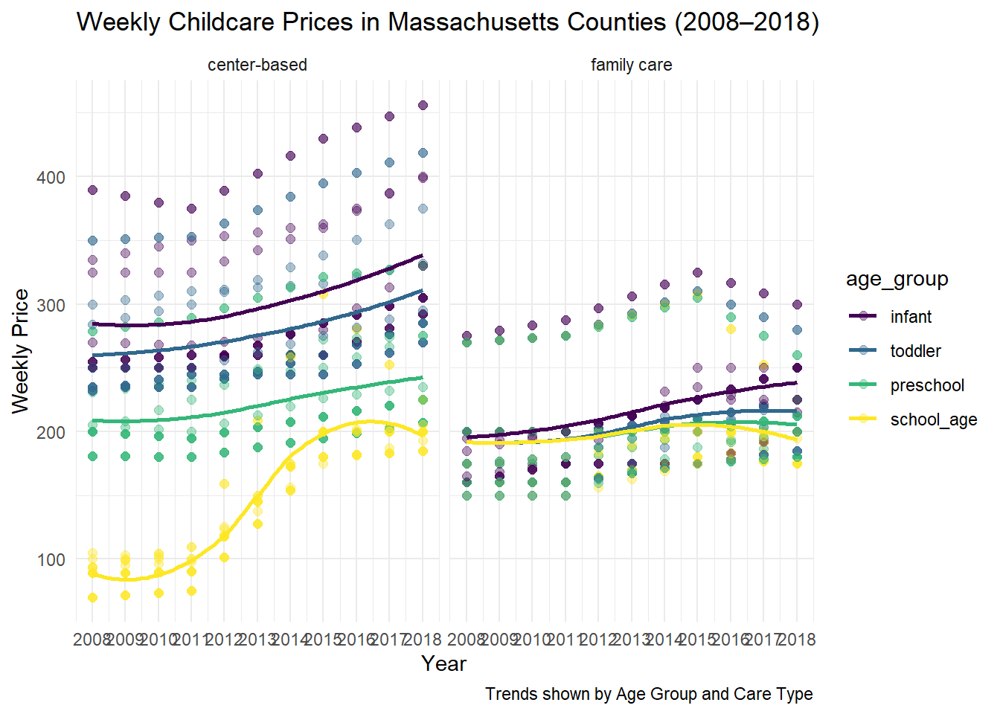

library(tidyverse)
childcare <- readr::read_csv('https://raw.githubusercontent.com/rfordatascience/tidytuesday/main/data/2023/2023-05-09/childcare_costs.csv')
USA <- readr::read_csv('https://raw.githubusercontent.com/rfordatascience/tidytuesday/main/data/2023/2023-05-09/counties.csv')
cost_df <- left_join(childcare, USA, by = join_by(county_fips_code))|>
rename(mc_school_age = mcsa,
mfcc_school_age = mfccsa)
cost_long <- cost_df |> pivot_longer(cols = c(mc_school_age, mc_infant, mc_toddler, mc_preschool,
mfcc_school_age, mfcc_infant, mfcc_toddler, mfcc_preschool),
names_to = c("care_type", "age_group"),
names_pattern = "(mc|mfcc)_(.*)",
values_to = "price")
cost_long <- cost_long |> mutate(care_type = if_else(care_type == "mc",
true = "center-based",
false = "family care")) |>
select(study_year, state_name, county_name, care_type, age_group, price)Introduction
This is an exploration of a data set of childcare prices across the U.S. from 2008 to 2018. The data comes from the tidytuesday repository and the description said it was sourced from the National Database of Childcare Prices (NDCP). Here is the link for the tidytuesday repository from which this data was sourced: https://github.com/rfordatascience/tidytuesday/blob/main/data/2023/2023-05-09/readme.md
The main data set consists of 34, 567 observations and 61 variables of childcare price data by childcare provider type, age of children, and county characteristics in the U.S. from 2008 to 2018. For the purpose of this exploration, this data set will be merged with a data set of U.S. counties and states according to their FIPS codes (unique numeric identifier for counties).
The data features two types of childcare providers: Center-based Care and Family Childcare. According to the Center for American Progress, Center-based Care is care offered in a nonresidential facilities like daycare centers where children are usually grouped into classrooms and supervised by multiple staff members, while Family Childcare is care provided in a private homes, often run by an individual provider.
In this data set, I am mostly interested in the study_year, county_name, state_name, and the variables for aggregated full-time median prices charged for Center-based Care and Family Childcare to study trends in childcare prices over time and across states, age groups and systems based on the following questions:
What is the spatial distribution of average childcare prices across U.S states?
What was the trend in prices of childcare between 2008 and 2018 in the state with the highest price levels?
How do childcare prices differ across age groups and childcare type?
It is worth noting that the prices provided in this data set are median weekly prices of childcare per county.
Visualizations
Differences by Age Group and Provider Type
#removing NA values for type comparisons
cost_long1 <- cost_long |> filter(!is.na(care_type), !is.na(age_group), !is.na(price)) |>
mutate(age_group = as.factor(age_group)) |>
mutate(age_group = fct_relevel(age_group, "infant", "toddler", "preschool", "school_age"))
# comparing age group prices
ggplot(data = cost_long1, aes(x = age_group, y = price)) +
geom_boxplot(width = 0.3, colour = "darkblue", fill = "skyblue") +
theme_minimal() +
labs(title = "Box Plot of weekly prices of childcare by age-group",
x = "Age group",
y = "weekly price")
Infant care tends to have higher median of prices and have outliers that tend to reach higher prices, while preschool and toddler care tend to have lower median prices, with preschool-age care having the least mean price of the four categories. This means that the cost of infant care tends more expensive than preschool and toddler care. Infants are 0 to 1 year olds, toddlers are children aged 1 to 3 years, preschoolers are aged 3 to 5 years, and school-aged children are 6 to 17 year olds. From the side-by-side boxplot above, it can be seen that the mean weekly price of childcare gets lower as the age group increases in years. This could be because the younger children require more intensive care than the older ones.
# comparing care types
ggplot(data = cost_long1, aes(x = care_type, y = price)) +
geom_boxplot(width = 0.3, colour = "darkblue", fill = "skyblue") +
theme_minimal() +
labs(title = "Boxplot of weekly prices of childcare by Care Type",
x = "Care Type",
y = "weekly price")
From the boxplot above, it can be observed that the weekly prices for center-based childcare have a higher median and higher reaching outliers than family-based care. This suggests that center-based care tends to be more expensive than family-based child care. This could be because in center-based care, one provider cares for many children at once, therefore leading to more work which requires higher pay.
Geographic Variation in Childcare Costs
To assess the spatial distribution of median weekly childcare prices across the United States, across age ranges and childcare types, below is a choropleth map.
library(maps)
state_df <- ggplot2::map_data("state")
cost_st <- cost_long |> mutate(state_name = str_to_lower(state_name)) |>
group_by(state_name) |>
summarise(average_price = mean(price, na.rm = TRUE))
state_cost <- left_join(cost_st, state_df, by = c("state_name" = "region"))
ggplot(data = state_cost, aes(x = long, y = lat, group = group)) +
geom_polygon(colour = "black", aes(fill = average_price)) +
coord_map(projection = "albers", lat0 = 39, lat1 = 45) +
theme_void() +
scale_fill_viridis_b() +
labs(title = "Average childcare prices across the U.S.")
From the map above, it can be observed that the states of Indiana and New Mexico are the only two that have a grey color. This is because they did not have any childcare price data in this data set.
Massachusetts has the highest average weekly childcare prices of all states. Some of the states with the lowest average childcare prices are North Dakota and South Dakota.
Childcare Price Trends Over Time in Massachusetts
To study the trends in childcare prices in Massachusetts between 2008 and 2018, the scatterplot below shows trends in weekly median prices of childcare in counties in Massachusetts over those years.
cost_mass <- cost_long |> filter(state_name == "Massachusetts") |>
mutate(age_group = fct_relevel(age_group, "infant", "toddler",
"preschool", "school_age"))
ggplot(data = cost_mass, aes(x = study_year, y = price)) +
geom_point(aes(colour = age_group), alpha = 0.4, size = 2) +
geom_smooth(aes(colour = age_group), se = FALSE, size = 1) +
facet_wrap(~care_type) +
scale_x_continuous(breaks = seq(2008, 2018, 1)) +
scale_color_viridis_d() +
theme_minimal() +
labs(title = "Weekly Childcare Prices in Massachusetts Counties (2008–2018)",
caption = "Trends shown by Age Group and Care Type",
x = "Year",
y = "Weekly Price")Warning: Using `size` aesthetic for lines was deprecated in ggplot2 3.4.0.
ℹ Please use `linewidth` instead.`geom_smooth()` using method = 'loess' and formula = 'y ~ x'
The plot above shows childcare prices to have generally increased between 2008 and 2018 for each age-group. However, the childcare prices for school-age children remains the lowest of all 4 categories, with the highest being infant care.
Weekly median prices of center-based childcare are generally higher than family-based care for infant, toddler and preschool aged children in Massachusetts throughout the years. However, childcare for school-aged children used to be much lower in center-based systems than family-care between 2008 and 2011, then it increased rapidly to where it slightly surpassed family-based care prices by 2018.
Conclusion
From this exploration of childcare prices across the U.S. and on a smaller scale, in Massachusetts, it can be concluded that weekly median childcare prices differ according to different age-groups of children and the two different childcare systems. Center-based childcare appeared to be typically more expensive than family-based childcare, which might be due to the cost of paying for facilities in a center and staff salaries since centers like day-care centers usually hire multiple workers. Infant care also appeared to consistently be more expensive than all 3 other age-group categories. This might be because infants need more continuous and hands-on care than the older children.
Potential improvements to this project could be creating a linear regression model to visualize the relationship between price of childcare and some of the variables such as age_group and others.
Connection to Class Concepts
I used a choropleth map to visualize spatial distribution of average weekly childcare prices throughout the U.S. The visualizations I made use colors that are accessible for individuals with Color Vision Deficiency.
The limitation with this data set is that the raw data provided median weekly prices not actual prices, so the explorations above are based on weekly median childcare prices, therefore, we do not have access to the original sample size and variability.
References
- Center for American Progress. Understanding the Basics of Child Care in the United States. Center for American Progress, https://www.americanprogress.org/article/understanding-the-basics-of-child-care-in-the-united-states/.